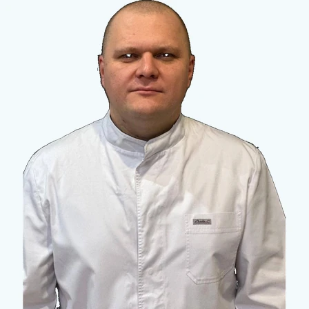
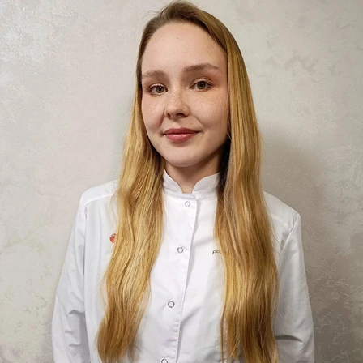
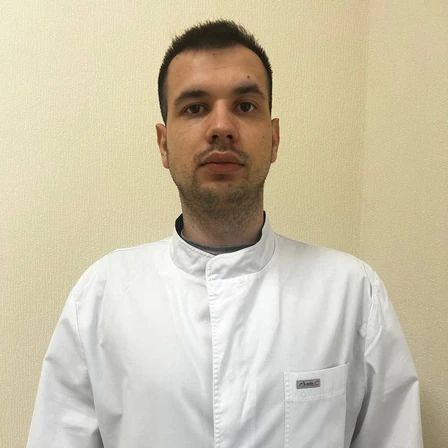

Парамонов Сергей Владимирович
Главный врач, фельдшер СМП, фельдшер-нарколог

Главный врач, фельдшер СМП, фельдшер-нарколог

Врач психиатр-нарколог, психиатр

Наркология

Психиатр-нарколог
Специализируется на выездной детоксикации и купировании тяжёлой абстиненции на дому.

Психиатр-нарколог
Ведёт пациентов с длительными запоями и подбирает схемы кодирования после стабилизации.

Психиатр-нарколог
Консультирует родственников и помогает мягко мотивировать пациента на лечение.

Фельдшер-нарколог
Готовит и проводит детоксикационные капельницы в составе выездной бригады.

Фельдшер-нарколог
Специализируется на стабилизации состояния при острой интоксикации и абстиненции.

Медицинская сестра
Сопровождает пациентов в стационаре и контролирует процедуры во время лечения.

Медицинская сестра
Ведёт постпроцедурное наблюдение и поддержку пациентов после детоксикации на дому.

Клиника «Свой нарколог» в Иваново и партнёрская площадка в Ярославле
Иваново, ул. Жиделёва, 21, лит. А
Ярославль, ул. Свердлова, 25г